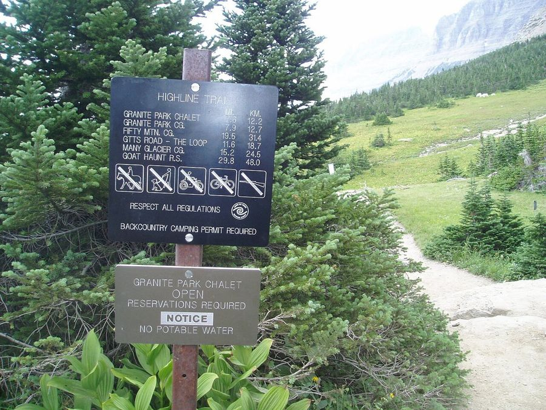
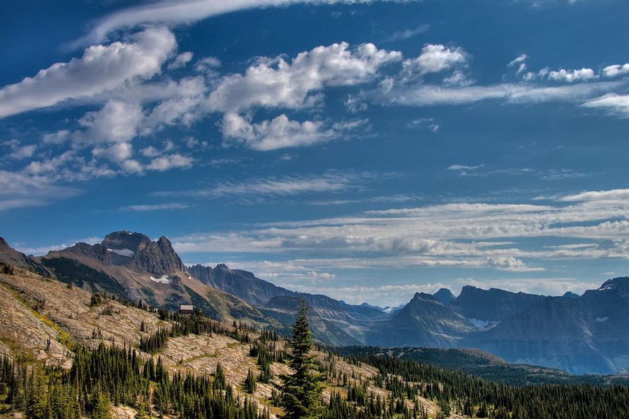

The route starts here. Follow the marked trail toward Granite Park Chalet.
Photo: Gary Miotla · CC BY 3.0 · Wikimedia Commons

You have reached Granite Park Chalet. The route profile follows the trail from the named trailhead to this endpoint.
Photo: Robtooker629 · CC BY-SA 3.0 · Wikimedia Commons